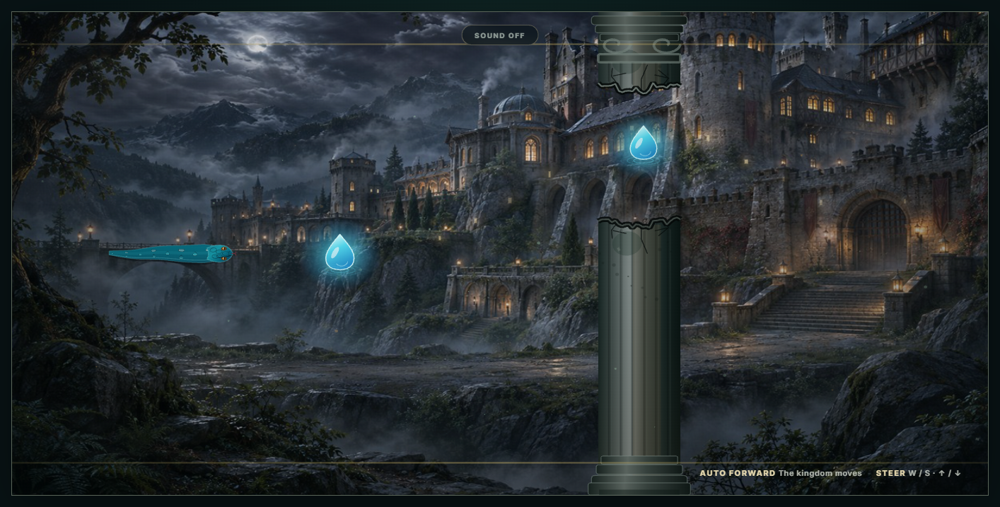
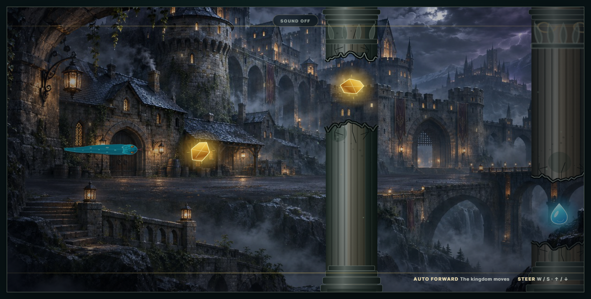
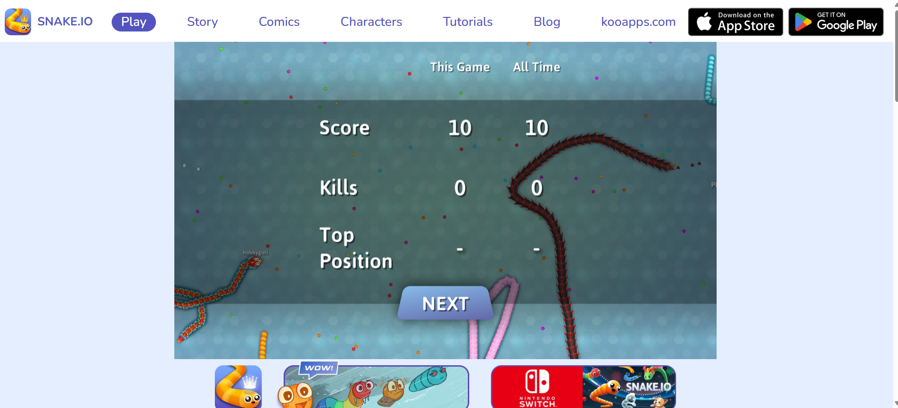
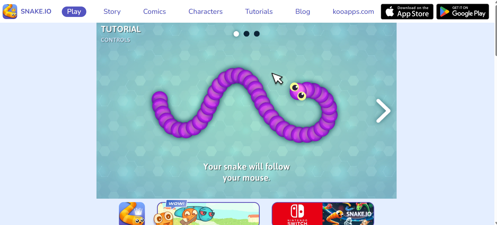
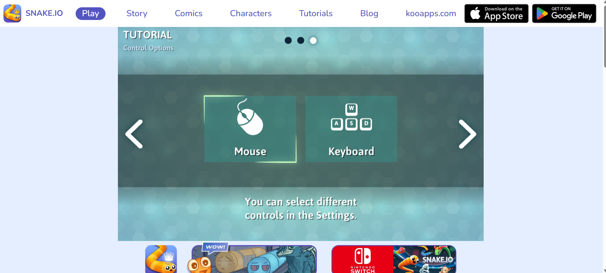

Awakening
🔥 Seek Fire
The journey begins outside the kingdom. Navigate broken passages and collect 10 glowing fire elements.
- Fire
- Safe
- Goal
- 10 Fire
The more you consume, the harder you become to control.
SERPENT: THE LIVING PATH is an atmospheric fantasy survival game in which the player guides a living serpent through an ancient kingdom. The serpent travels forward automatically while the player steers through broken architectural passages, identifies the correct elemental target, and avoids deadly collisions. As the journey progresses, the rules change: fire gives way to water, then gold, while previously safe elements become dangerous. Every five correct collections increase the serpent's speed, turning movement, memory, and perception into a progressively harder survival challenge.
Play Game Enter the kingdom ↗
Enter the kingdom ↗
Three progressive stages
🔥 Seek Fire
The journey begins outside the kingdom. Navigate broken passages and collect 10 glowing fire elements.
💧 Seek Water
The rules change deeper inside the kingdom. Collect 10 water elements while fire remains as a deadly false target.
◆ Seek Gold
Collect gold for the highest possible score. Fire and water remain in the world, but both now end the run.
The rules change
The game begins by teaching the player to seek fire. In Level 2, that learned behavior becomes dangerous when water becomes the new target. In Level 3, both fire and water become hazards, leaving gold as the only safe collectible.
Movement+Memory+Perception
Core gameplay
Every 5 correct collections, you become faster.
The target changes. The danger remembers.
Progressive environments


Living systems
The protagonist is a living creature rather than a grid-based Snake character. Its realistic turquoise body carries visible scales and a lighter underside, follows the head with delayed curved motion, grows through collection, and becomes harder to control as speed rises.
Lanterns, castle windows, magical lights, and atmospheric glows compete with the active collectible. Real targets use active motion, stronger glow, and distinct particles; environmental lights remain softer, slower, and non-interactive.
Monumental architecture, castle structures, mountains, moonlight, moving clouds, layered fog, warm lights, lightning, particles, and false glows create both spatial difficulty and perceptual distraction.
Broken passages
Ancient columns fracture across the serpent's path, creating narrow openings that shift vertically and force continuous up-and-down steering.
Sound of the kingdom
The game uses a continuous dark-fantasy soundtrack that combines rhythmic energy with horror atmosphere. The music grows more intense as the serpent moves from Awakening to The Climb and finally Survival, while elemental sounds, serpent hisses, thunder, and collision effects remain layered above the music.
Level 1Mysterious · restrained
Level 2Deeper · more tense
Level 3Darkest · most intense
FireWarm flare
WaterFluid glass tone
GoldMetallic shimmer
Final Project · Game Precedent Study
Snake.io was studied as a gameplay precedent for continuous snake movement, directional control, collection, growth, scoring, and survival-based progression. These observations informed the basic movement logic of SERPENT: THE LIVING PATH, while the final project develops a different experience through an original fantasy environment, architectural obstacles, changing elemental rules, atmospheric sound, and a three-stage progression system.
SERPENT transforms the familiar snake-game loop into a changing-rule survival experience built around movement, memory, and perception.
Gameplay precedent: Snake.io by Kooapps Games
Snake.io is presented as an independent gameplay precedent and process reference. SERPENT: THE LIVING PATH is an original final semester project and is not affiliated with or endorsed by Kooapps Games.
Precedent Observation

Snake.io uses score and survival performance to communicate player progression.

The snake follows a continuous curved path rather than moving as a rigid visual object.

Snake.io supports direct directional control through mouse or keyboard input.
Controls
W / ↑Move Up
S / ↓Move Down
AutomaticForward movement
Watch the target
Level 1Fire
Level 2Water
Level 3Gold
Touching an outdated element in Levels 2 or 3 ends the run.